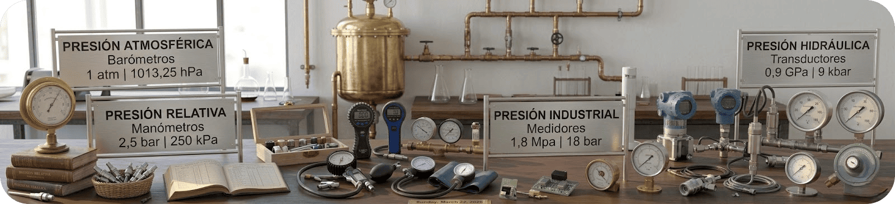

La ciencia de la presión.
Aunque la palabra presión forma parte de nuestro vocabulario, el concepto físico quizás sea algo más complicado ya que en él interviene otra magnitud derivada como es la fuerza. Seguramente has escuchado en el tiempo hablar de bajas presiones atmosféricas, el médico te ha hablado de la tensión o presión arterial, o simplemente has cocinado en alguna ocasión con una olla exprés. Pues bien, en estos tres ejemplos estamos hablando de la magnitud física presión.
En el siguiente vídeo nos explican cómo funciona la presión a través de unos sencillos experimentos.
Las fuerzas.
Los cuerpos pueden sufrir cambios en su forma de moverse, pasar de estar parados a moverse y viceversa, recibir presiones, experimentar deformaciones, etc. ¿Cuál es la causa de todos estos cambios?: las fuerzas.
Fuerza y presión.
Para no hundirse en la nieve es conveniente usar unas raquetas especiales de mayor superficie de apoyo que los zapatos. Por el contrario, los zapatos de tacón fino deforman el suelo y se hunden con mucha facilidad.
Si una fuerza actúa sobre una superficie pequeña, su efecto deformador es grande.
Si una fuerza actúa sobre una superficie grande, su efecto deformador es pequeño.
El poder deformador de una fuerza se "reparte" en la superficie sobre la que actúa. La magnitud escalar que mide este "reparto" es la presión, que se define como la "fuerza aplicada perpendicularmente sobre cada unidad de superficie". Se obtiene dividiendo la fuerza perpendicular \(F\) entre la superficie \(S\). \[\boldsymbol{\textrm{P}=\dfrac{F}{S}}\]
Analizando la fórmula descubrimos:
- cuanto mayor es la fuerza que se ejerce sobre una superficie, la presión es mayor
- cuanto menor es la superficie sobre la cual se ejerce una determinada fuerza, mayor es la presión
|
Una fuerza es una interacción entre dos cuerpos capaz de provocar cambios en los mismos. Se mide en una unidad llamada newton (N) en honor de Isaac Newton (su descubridor). La presión es el cociente entre la fuerza aplicada (F) y la superficie (S) sobre la que se aplica, La unidad fundamental de presión es el pascal (Pa), en honor de su descubridor Blaise Pascal.\[\color{green}{\boldsymbol{\textrm{P}=\dfrac{F}{S}}}\] |
Un pascal es la presión que ejerce un newton sobre un metro cuadrado (de forma perpendicular).
Ejemplo.
Si conocemos la fuerza y la superficie, podemos calcular la presión.
Por ejemplo, para expresar la presión que ejerce una fuerza \(F = 10\textrm{ N} \) sobre una superficie \(S = 2\textrm{ m}^2\), escribimos:
\[\textrm{P} = \dfrac{F}{S} = \dfrac{10 \textrm{ N}}{2 \textrm{ m}^2} = 5 \textrm{ N/m}^2 = 5 \textrm{ Pa}\]
Ejercicio.
Otras unidades fuera del Sistema Internacional.
Instrumentos de medida.
Barómetro es un instrumento que mide la presión atmosférica.
Manómetro es un instrumento de medición para la presión de fluidos contenidos en recipientes cerrados.
